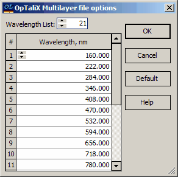

OpTaliX Multilayer format
OpTaliX Multilayer format
OptiLayer has the capability to export design specifications in the OpTaliX optical design software format provided by Optenso, Optical Engineering Software (website: http://www.optenso.com). During the export process, certain materials may need to be converted to a tabular form. It is important to specify the wavelength grid for the tabular presentation of these materials to ensure accurate data representation and compatibility with the OpTaliX software. This step is necessary to facilitate seamless integration and proper interpretation of the exported design specifications in the optical design software.

When you click on the Default button in OptiLayer, it generates an evenly spaced wavelength grid with 21 points spanning from 400 to 800 nm. After clicking the OK button, you will be prompted to enter a filename for the file that will store the coating data. The default extension for this file should be *.otc. It’s important to note that the dispersion properties of the Layer Materials are also saved in the same .otc file. This feature is supported by OpTaliX software versions that are higher than 6.86. This ensures that the coating data and material properties are saved together in a format that is compatible with newer versions of OpTaliX for streamlined integration and analysis.